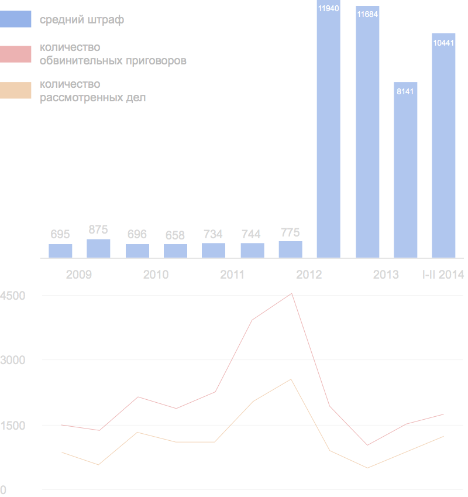

Политические репрессии в России в 2011—2014 годах: административные преследования
#
Резюме
В докладе анализируется применение административного политического преследования в России в 2011—2014 годах.
Под административными политическими преследованиями понимается обвинение отдельных людей в административных правонарушениях по политическим мотивам, носящее неправомерный характер. Исследование преследует следующие цели:
очертить особенности административного преследования как инструмента политического давления
описать практику его применения в 2011-2014 годах на примере конкретных случаев
на базе количественных данных выявить тенденции, наметившиеся в рассматриваемый период
выявить методологические проблемы, возникающие при определении административного преследования как политического
Рассмотренные в докладе данные позволяют прийти к следующим выводам:
В последние годы происходит ужесточение административного законодательства. Кодекс об административных правонарушениях был дополнен рядом статей, являющихся политизированными изначально в силу их тематики: в 2012 году вводится статья об “одновременном массовом пребывании”, в 2013 — о “пропаганде нетрадиционных сексуальных отношений”.
Исключение составляют статья 20.2, пик дел по которой пришелся на конец 2011 — начало 2012 года, и статья 6.21, поскольку количественные данные о делах по ней доступны только за одно полугодие и говорить о тенденциях ее применения пока невозможно.
На первое полугодие 2014 года пришелся максимум обвинительных постановлений по всем рассматриваемым статьям: 70% от всех рассмотренных дел по статье 20.2 КоАП, 76% по статье 20.2.2, 77% по статье 20.3, 80% — по 20.29. Исключение составляет статья 6.21, из девяти дел по которой не было вынесено ни одного обвинительного решения.
Административное преследование может показаться менее опасным, чем уголовное, однако это не всегда соответствует действительности: по отдельным административным статьям наказания могут быть выше уголовных санкций. Это характерно для статей, направленных против участников публичных мероприятий — 20.2 и 20.2.2 КоАП.
Кроме того, административное преследование сопряжено с многочисленными негативными последствиями для преследуемого. Это не только наказание, предусмотренное КоАП, но и сам факт преследования, помеха действиям в конкретный момент времени, попадание в полицейскую базу данных с информацией о правонарушителях, а также возможные долгосрочные последствия: помехи работе или учебе, повышенное внимание со стороны правоохранительных органов, риск нового преследования, а в широкой перспективе — маргинализация общественной и политической деятельности.
Наконец, в отличие от уголовных методов давления, преследование людей по политическим мотивам с использованием административных статей предполагает меньшие возможности для защиты и меньшую публичность.
#
Введение
Предмет данного исследования — преследование по административным статьям как метод политического давления и его применение в современной России.
Административное преследование традиционно не выделяется в особую группу ни в российских, ни в зарубежных исследованиях. На международном уровне это объясняется отсутствием разделения противоправных действий на административные и уголовные по степени их общественной опасности. В результате обвинение и по административным, и по уголовным статьям по политическим мотивам в России подпадает под общее определение «политическое преследование».
В центре внимания и в России, и на международном уровне находятся случаи преследования, сопровождающиеся наиболее суровыми санкциями, прежде всего, сопряженные с лишением свободы. Российское законодательство предполагает возможность продолжительного заключения только по уголовным статьям, поэтому истории людей, подвергшихся административному давлению, неминуемо остаются в тени.
Отсутствие разделения административного и уголовного политического преследования в теории и концентрация внимания на уголовных делах на практике не дают осознать, насколько широко административные репрессии распространены в современной России. В настоящем докладе предпринята попытка очертить специфику административных политических преследований и методологические проблемы, возникающие при определении административного преследования как политического, а также детально описать практику их применения в последние годы, опираясь на количественные данные официальной судебной статистики и правозащитных проектов, и на примере конкретных случаев.
#
Что такое административное политическое преследование
#
Определение
Под административным политическим преследованием в данном докладе понимается неправомерное обвинение человека в административном правонарушении по политическим мотивам.
Фактом преследования считается именно обвинение в правонарушении, а не признание виновным или назначение наказания.
Государство применяет административное давление и к целым группам и организациям, однако в данном докладе такие случаи рассматриваются только тогда, когда они привели к преследованию конкретного человека.
#
Специфика административных дел
Этот тип политического давления осуществляется непосредственно государственными служащими с формальными отсылками к законодательству, по определенной прописанной в законе процедуре и с предусмотренным законом наказанием. В отличие от «внесудебных» методов давления, такие случаи хорошо задокументированы: они сопровождаются, по меньшей мере, протоколом об административном правонарушении, а при необходимости рассмотрения дела в суде также постановлением суда.
В отличие от уголовного преследования, непосредственными инициаторами которого выступают следственные подразделения МВД, прокуратуры, Следственного комитета или ФСБ, в случае с административным преследованием эту роль как правило выполняют сотрудники полиции или реже, в зависимости от конкретной статьи, некоторые другие должностные лица.
Поводом для возбуждения административного дела может стать как «непосредственно обнаружение должностными лицами достаточных данных, указывающих на наличие события правонарушения», так и материалы, поступившие из государственных органов, органов местного самоуправления или от общественных объединений, заявления физических и юридических лиц, сообщения в СМИ.
Протокол об административном правонарушении должен быть направлен на рассмотрение в течение трех суток после составления. В зависимости от статьи, решение по административному делу выносит мировой или районный суд, либо органы исполнительной власти — как правило, непосредственно полиция, составляющая протокол об административном правонарушении. На рассмотрение дела должностным лицом КоАП отводит 15 суток, на рассмотрение в суде — до двух месяцев с момента получения материалов, этот срок может быть продлен максимум еще на месяц по ходатайству участников процесса. Срок давности по административным делам составляет от двух месяцев до шести лет, в зависимости от сферы правонарушения. Так, срок давности по делам о нарушениях на митингах и о «пропаганде нетрадиционных сексуальных отношений среди несовершеннолетних» составляет один год.
В отличие от уголовного процесса, в административном не предусматривается бесплатная правовая помощь, редуцирован этап предварительного следствия, нет стадии ознакомления стороны защиты с материалами дела до начала рассмотрения, в суде отсутствует этап исследования доказательств с участием сторон и в целом отсутствует сторона обвинения, протокол об административном правонарушении — аналог обвинительного заключения в уголовном деле — сам по себе является доказательством, и функция обвинения фактически перекладывается на судью. Наконец, отсутствует коллегиальность на всех этапах рассмотрения, начиная от мировых и районных судов и вплоть до Верховного суда, — в то время как решения по апелляциям по уголовным делам принимаются коллегиально.
Действующая версия КоАП предусматривает десять видов административных наказаний. Это предупреждение, административный штраф, административный арест, обязательные работы, а также более специфические варианты: конфискация орудия совершения правонарушения, лишение специального права, административное выдворение за пределы России (для иностранных граждан), дисквалификация и приостановление деятельности, а также административный запрет на посещение мест проведения официальных спортивных соревнований в дни их проведения. Ниже описана специфика тех видов административных наказаний, которые применяются чаще других.
Протокол об административном правонарушении должен быть направлен на рассмотрение в течение трех суток после составления. В зависимости от статьи, решение по административному делу выносит мировой или районный суд, либо органы исполнительной власти — как правило, непосредственно полиция, составляющая протокол об административном правонарушении. На рассмотрение дела должностным лицом КоАП отводит 15 суток, на рассмотрение в суде — до двух месяцев с момента получения материалов, этот срок может быть продлен максимум еще на месяц по ходатайству участников процесса. Срок давности по административным делам составляет от двух месяцев до шести лет, в зависимости от сферы правонарушения. Так, срок давности по делам о нарушениях на митингах и о «пропаганде нетрадиционных сексуальных отношений среди несовершеннолетних» составляет один год.
В отличие от уголовного процесса, в административном не предусматривается бесплатная правовая помощь, редуцирован этап предварительного следствия, нет стадии ознакомления стороны защиты с материалами дела до начала рассмотрения, в суде отсутствует этап исследования доказательств с участием сторон и в целом отсутствует сторона обвинения, протокол об административном правонарушении — аналог обвинительного заключения в уголовном деле — сам по себе является доказательством, и функция обвинения фактически перекладывается на судью. Наконец, отсутствует коллегиальность на всех этапах рассмотрения, начиная от мировых и районных судов и вплоть до Верховного суда, — в то время как решения по апелляциям по уголовным делам принимаются коллегиально.
Действующая версия КоАП предусматривает десять видов административных наказаний. Это предупреждение, административный штраф, административный арест, обязательные работы, а также более специфические варианты: конфискация орудия совершения правонарушения, лишение специального права, административное выдворение за пределы России (для иностранных граждан), дисквалификация и приостановление деятельности, а также административный запрет на посещение мест проведения официальных спортивных соревнований в дни их проведения. Ниже описана специфика тех видов административных наказаний, которые применяются чаще других.
Предупреждение, или официальное порицание в письменной форме, может быть установлено только за правонарушение, совершенное впервые.
Штраф для граждан за большую часть административных правонарушений не превышает пяти тысяч рублей, однако в ряде исключительных случаев может достигать 300 тысяч рублей.
Возможность наказания в виде административного ареста предполагают только отдельные статьи КоАП. Максимальный срок ареста составляет, как правило, 15 суток, в исключительных случаях — до 30 суток. В этот срок включается время задержания, которое при обвинении по «арестным» статьям может быть увеличено с трех до 48 часов. В отличие от штрафа, такую меру может назначать только судья, причем заседание должно состояться незамедлительно в день передачи материалов в суд, а в случае задержания — в течение 48 часов с момента задержания. КоАП запрещает держать под арестом беременных женщин, женщин, имеющих детей младше 14 лет, несовершеннолетних, инвалидов I и II группы, а также военнослужащих и сотрудников силовых ведомств, имеющих специальные звания.
Наказание в виде обязательных бесплатных общественно полезных работ на срок от 20 до 200 часов также может назначить только суд. К обязательным работам не разрешается приговаривать беременных женщин или женщин с малолетними детьми, инвалидов, сотрудников силовых ведомств.
В отличие от Уголовного кодекса, КоАП не предполагает таких наказаний, как исправительные работы, ограничение свободы и лишение свободы на длительные сроки (более 30 дней).
Таким образом, основные различия между административным и уголовным преследованием заключаются в процедуре и степени тяжести наказания. Все решения принимаются быстрее и с меньшими возможностями для защиты, но и, теоретически, с меньшими рисками: срок лишения свободы здесь измеряется не в годах, а в днях или часах, штрафы — в тысячах и десятках (но, как правило, все же не в сотнях) тысяч рублей.
Разделение на административное и уголовное преследование продиктовано исключительно внутренними российскими юридическими нормами и остается во многом условным. При рассмотрении в Страсбургском суде дела, которые в России относятся к административному праву, могут быть приравнены к уголовным из-за тяжести наказания1. Размыванию границы между административным и уголовным преследованием способствует и планомерное ужесточение санкций за административные правонарушения по статьям, часто применяющимся для давления на политических активистов (как это происходит, например, с нормами, регулирующими проведение публичных мероприятий или направленными на борьбу с экстремизмом), или же их криминализация (введение уголовного наказания за «неоднократные» нарушения на митингах летом 2014 года).
#
Последствия административного политического преследования
Наказание, предусмотренное конкретной статьей, — как правило это обязательные работы, штраф или арест, — не является единственным возможным итогом административного преследования. Прежде всего, это помеха действиям в конкретный момент времени, в случае задержания — несколько часов в ОВД, это отнимающий время судебный процесс.
У административного преследования существуют также долгосрочные последствия и риски, напрямую законом не предусмотренные. Во-первых, оно может стать помехой работе или учебе2. Во-вторых, оно может привести к попаданию в «группу риска», для которой более вероятно как уголовное3, так и внесудебное преследование. В частности, административное дело может стать причиной особого внимания со стороны полиции и посещений участкового4. В-третьих, данные о всех правонарушениях сохраняются в базе полиции и учитываются в дальнейшем: при новом правонарушении выписка из базы прикладывается к материалам, направляемым в суд. Запись о правонарушении не удаляется5 — ни после исполнения постановления суда, ни по прошествии определенного срока, будь то год или десять лет, ни даже при отмене решения вышестоящим судом.
Наконец, с помощью административных дел государство маргинализирует политическую, общественную и гражданскую деятельность в целом или конкретные ее направления, представляя причастных к ней людей нарушителями закона.
#
Статус и публичность административного преследования
В отличие от уголовного преследования, жертвами административного давления по политическим мотивам ежегодно становятся не единицы или десятки, а тысячи людей по всей стране, причем с меньшими возможностями для защиты в суде и в условиях несопоставимо меньшей публичности и внимания к каждому конкретному делу со стороны правозащитников и СМИ.
Большая публичность в СМИ обычно достигается только при большом количестве преследуемых, как это происходит, например, при массовых задержаниях на публичных акциях, при давлении на известного человека6, при расширении репрессий на новую социальную группу или с применением новой статьи.
Степень внимания российских и международных правозащитных организаций зависит, как правило, от санкций в отношении преследуемого. В особую группу выделяются, прежде всего, случаи применения наиболее суровой санкции — лишения свободы. Для того, чтобы требовать от национальных властей пересмотра решений о лишении свободы, которые рассматриваются как неправомерные и политически мотивированные, международные и межправительственные организации используют термин «политический заключенный». При этом смысловое содержание статуса существенно отличается в зависимости от того, какая организация его присуждает. Так, по определению Amnesty International, «политическим» является любой заключенный, в деле которого присутствует «весомый политический элемент, будь то мотивация действий заключенного, сами по себе действия или мотивация властей». Для таких людей организация требует справедливого судебного разбирательства в «разумные сроки». Наряду с этим термином Amnesty International с момента своего возникновения в 1961 году использует более узкое понятие «узник совести», которое применяется к политическим заключенным, преследуемым исключительно за ненасильственное отстаивание своих убеждений, — такие люди, по мнению организации, должны быть немедленно освобождены7. В 2012 году собственное определение понятия «политический заключенный» разработала Парламентская ассамблея Совета Европы. Согласно критериям ПАСЕ8, политическим заключенным следует считать человека, лишенного свободы, если при этом были нарушены базовые гарантии, закрепленные в Европейской конвенции о защите прав человека; если лишение свободы было произведено исключительно по политическим причинам, без связи с каким-либо нарушением; при исключительности сроков и условий содержания под стражей, обусловленной политическими причинами; или если решение о лишении свободы, которое вынес суд, было явно несправедливым и, по всей видимости, было связано с политическим мотивом.
Таким образом, если административное давление сопровождается задержанием или арестом, преследуемый может быть признан политическим заключенным по критериям ПАСЕ или узником совести по определению Amnesty International.
Системы критериев, разработанные на основе российской практики, также не предполагают прямого разделения административного и уголовного политического преследования — оно вводится опосредованно через перечень возможных санкций.
Ключевым официальным документом, посвященным вопросу политических преследований в России, является принятый в 1991 году закон «О реабилитации жертв политических репрессий». В нем политическими репрессиями называются «различные меры, применяемые государством по политическим мотивам», опирающиеся на судебные постановления или административные решения исполнительной власти и должностных лиц. Из списка репрессивных мер следует, что политическое преследование по административным статьям можно отнести к политическим репрессиям, только если оно сопровождается лишением свободы: ни обязательные работы, ни штраф, ни другие наказания, предусмотренные Кодексом об административных правонарушениях, не включены в перечень репрессивных мер.
В 2013 году группа правозащитников из Азербайджана, Белорусии, Грузии, Литвы, Польши, России и Украины разработала Руководство по определению понятия «политический заключенный»9. Политическим заключенным они предложили считать человека, лишенного свободы (причем только «на срок, заведомо превышающий законный период кратковременного задержания»10) из-за его убеждений, в связи с ненасильственным осуществлением свобод, гарантированных Европейской конвенцией о защите прав человека, в связи с ненасильственной деятельностью, направленной на защиту прав человека, или исключительно по дискриминационным признакам. Таким образом, по этому определению административное преследование может быть признано политическим, однако политическим заключенным преследуемый по административным статьям становится, только если суд назначает ему арест.
На практике российские правозащитные организации никогда не присваивают официальный статус преследуемым в административном порядке, а международные организации делают это крайне редко. В мае 2012 года Amnesty International признала11 «узниками совести» Алексея Навального и Сергея Удальцова, задержанных во время протестных гуляний и приговоренных к аресту за неподчинение полиции. В марте 2014 года организация признала12 «узниками совести» всех задержанных на акциях в поддержку обвиняемых по «Болотному делу» и против введения войск на территорию Украины.
Такие случаи происходят настолько редко, что только подтверждают общее правило: подавляющее большинство фактов административного политического давления неминуемо остается в тени. Это тем более усугубляется постоянным сужением круга СМИ и блогов, готовых обсуждать эту тему, и давлением на них путем предупреждений со стороны Роскомнадзора, вмешательством в редакционную политику собственников СМИ и другими способами.
#
Критерии политического мотива при административном преследовании
Из-за широкого распространения административного давления и в условиях, когда такие дела рассматриваются быстро и непублично, сложнее оказывается и доказать неправомерность преследования и наличие политического мотива в каждом конкретном случае, что, в свою очередь, мешает осознать масштаб подобных репрессий.
Серьезным затруднением становится и общий негативный фон: конкретные нарушения на всех стадиях административного преследования — при задержании и доставлении в ОВД13, при составлении административного протокола и рассмотрении дела в суде, — сами по себе не являются исключительной спецификой политических процессов, а основываются на фундаменте из сложившихся в этих ведомствах представлений и практик, то есть обусловлены глубинными проблемами российской полицейской и судебной системы в целом. Безнаказанность полиции, подтверждение судами составленных в ОВД протоколов, игнорирование аргументов защиты — все это становится «белым шумом», в котором теряются случаи преследования по политическим мотивам и в целом размывается граница между целенаправленным политическим давлением и случайным произволом.
Наличие следующих признаков позволяет с большей уверенностью говорить о конкретном случае преследования именно как о политически мотивированном.
Это, во-первых, общественная деятельность предполагаемого нарушителя: дело, возбужденное на политика или политического активиста, члена НКО или участника гражданской инициативы по контролю за полицией или наблюдению за выборами, адвоката, занимающегося политическими делами, или журналиста, представившего конкретного чиновника в неприятном для него свете, естественно, с большей вероятностью может оказаться «политическим», хотя не обязательно таковым является.
Во-вторых, это «политичность» самой области правонарушения: если речь идет о действиях, права на которые гарантированы Основным законом Российской Федерации и подписанными ею международными соглашениями, такие как право на свободу мирных собраний, свободу выражения мнения, свободные выборы, религию или защиту от дискриминации.
Вторичным признаком является избирательность административного преследования, а также строгость приговора по сравнению с другими решениями по той же статье.
Наконец, косвенным признаком является само восприятие преследования как политически мотивированного со стороны предполагаемого нарушителя и возможных свидетелей.
#
Мониторинг случаев административного политического преследования
Целенаправленный мониторинг всех случаев административного преследования по политическим мотивам в России на момент написания доклада не проводится. Существуют отдельные проекты и сообщества, собирающие информацию о политическом преследовании конкретных профессиональных групп или по определенным темам, а также по нарушениям в конкретных регионах.
В зависимости от источника политического мотива, проводится мониторинг давления на людей, занимающихся определенной деятельностью (например, журналистов, правозащитников, экологических активистов), или же по области преследования, если речь идет о вероятности нарушения базовых гражданских свобод (например, случаев дискриминации по признакам сексуальной ориентации и гендерной идентичности, ограничения свободы собраний и свободы слова).
Сбором информации о преследовании правозащитников и правозащитных организаций в различных регионах России занимается Центр оперативного реагирования по защите правозащитников. На его сайте публикуются сообщения как о проверках и обысках НКО и признании их «иностранными агентами», так и о случаях давления на отдельных людей в рамках уголовных и административных дел или во внесудебном порядке, прежде всего — о случаях лишения свободы или физических угрозах. Под «правозащитниками» понимаются люди, которые «системно и регулярно» и ненасильственными методами «продвигают и защищают фундаментальные права человека других лиц», вне зависимости от профессиональной деятельности и принадлежности к конкретной организации14. Данные представляются в виде новостей, дайджесты публиковались только до 2013 года, обобщающие аналитические материалы — только по итогам 2011 года.
Информацию о преследовании журналистов собирают российский Фонд защиты гласности и международная неправительственная организация «Репортеры без границ». «Репортеры без границ» отслеживают, помимо изменений законодательства в области СМИ, попыток цензуры и давления на издания, также случаи преследования интернет-активистов и журналистов в связи с их профессиональной деятельностью — по всей видимости, в сводки15 попадают прежде всего сообщения об убийствах и уголовных делах. Помимо публикации отдельных новостей, организация ежегодно обновляет международный «Индекс свободы слова»16, при составлении которого учитываются случаи нападения на журналистов, их убийства или заключения под стражу. По результатам исследования каждой стране присваивается определенный балл, соответствующий уровню свободы информации, однако детальная количественная информация, на которой основываются эти подсчеты, в открытом доступе не публикуется. Мониторинг нарушений прав журналистов и СМИ на территории России с 1995 года проводит также Фонд защиты гласности17. Его результаты публикуются в обобщенном виде ежемесячно и за год. В частности, учитываются уголовные дела и случаи задержаний журналистов сотрудниками правоохранительных органов. Статистики по административному преследованию журналистов ФЗГ не предоставляет: под «административным давлением» понимаются проверки офисов СМИ со стороны пожарных, налоговых и санитарно-эпидемиологических служб. ФЗГ также поддерживает базу данных о нарушениях прав журналистов и СМИ18.
Сообщения о давлении на представителей сексуальных меньшинств и защитников прав ЛГБТ регулярно появляются в СМИ и на сайтах ЛГБТ-сообществ, а правозащитные организации публикуют аналитические доклады о дискриминации по гендерному признаку (их выпускали, например, Human Rights Watch19, Московская Хельсинская группа20, «Агора»21, Российская ЛГБТ-Сеть22), однако регулярный мониторинг таких случаев с представлением обобщенных данных не ведется.
В 2013 году для мониторинга преследования граждан, защищающих природу, — экологических активистов, ученых, журналистов, — был запущен проект «Экоузник». В первом (и единственном) годовом докладе23 проекта приводились количественные данные о случаях физического насилия в отношении экологических активистов, задержаниях, возбуждении уголовных и административных дел в различных регионах России. В начале 2014 года проект фактически прекратил свою деятельность.
Информационно-аналитический центр «Сова», исследующий проблемы национализма и ксенофобии, с 2002 года следит за случаями неправомерного использования антиэкстремистского законодательства, вне зависимости от наличия или отсутствия политического мотива. В статистические сводки, ежемесячно и ежегодно публикуемые на сайте «Совы», включены, в частности, и случаи преследования по административным «антиэкстремистским» статьям. Речь идет именно о «неправомерных приговорах»: в общую статистику не попадают дела, по которым был вынесен оправдательный вердикт. В то же время данные «Совы» включают случаи преследования не только отдельных людей, но и юридических лиц (например, интернет-провайдеров, книжных магазинов или религиозных общин24). «Сова» сама напоминает о методологических сложностях мониторинга. «Мы отдаем себе отчет в спорности границ правомерного и неправомерного в этой сфере, — подчеркивают исследователи. — Часть таких действий предпринимается злонамеренно, а антифашизм и антиэкстремизм используются лишь как прикрытие. Но к чрезмерному и неприемлемому ограничению гражданских прав могут вести и благие намерения»25.
В рамках проекта ОВД-Инфо с декабря 2011 года проводится регулярный мониторинг неправомерных задержаний на политических акциях. Под неправомерностью подразумевается нарушение сотрудниками полиции при задержании или оформлении задержанных действующего российского законодательства. Неправомерными считаются и задержания на мирных, но несогласованных акциях26. По итогам года данные публикуются в обобщенном виде. ОВД-Инфо не предоставляет полной информации о политических задержаниях по всей России: в 2012 году были доступны только данные по Москве и Московской области, в 2013 году мониторинг начал проводиться также в Санкт-Петербурге, Нижнем Новгороде, Воронеже и соответствующих областях. Кроме того, фиксируются именно случаи задержания и доставления в ОВД, многие из которых завершаются без составления протокола об административном правонарушении.
Таким образом, в поле зрения групп, занимающихся мониторингом политических преследований в разных областях, нередко попадают одни и те же случаи давления, однако при этом нет гарантий, что конкретный инцидент не останется без внимания. При этом существенно различаются и представления о неправомерности, и географическая и временная детализация, и подходы к классификации, которые вырабатываются с учетом специфики каждой конкретной области. Как правило, административные преследования в отдельную группу не выделяются. Отсутствие общих подходов и критериев приводит к тому, что даже те данные, которые были собраны, не пригодны для сопоставления и, следовательно, не показывают, насколько широко административные статьи применяются в современной России в качестве метода политического давления.
#
Применение административного политического преследования
#
Преследование по «политическим» административным статьям
Административные статьи, используемые для политического давления, можно разделить на две группы: это статьи изначально политизированные, предполагающие ограничение гражданских свобод, и статьи нейтральные, «политичность» дела по которым вытекает только из конкретного контекста применения, то есть используемые по принципу «был бы человек, а статья найдется».
К первым относятся норма Кодекса об административных правонарушениях, ограничивающая права сексуальных меньшинств (статья 6.21), статьи о нарушениях на митингах и собраниях (20.2 и 20.2.2), блок «антиэкстремистских» статей (20.3, 20.29). Преследование по этим статьям, политизированное само по себе, не обязательно является неправомерным, однако допущенные законодателями чрезвычайно общие формулировки позволяют представителям власти трактовать их недопустимо широко, что неминуемо ведет к злоупотреблениям.
#
Преследование за «пропаганду нетрадиционных сексуальных отношений»
Статья 6.21 (пропаганда нетрадиционных сексуальных отношений среди несовершеннолетних) была внесена в Кодекс об административных правонарушениях в июне 2013 года. К этому моменту законы, запрещающие «пропаганду гомосексуализма», уже действовали на местном уровне в девяти российских регионах. В соответствии с федеральной статьей, за «распространение информации, направленной на формирование у несовершеннолетних нетрадиционных сексуальных установок, привлекательности нетрадиционных сексуальных отношений, искаженного представления о социальной равноценности традиционных и нетрадиционных сексуальных отношений, либо навязывание информации о нетрадиционных сексуальных отношениях, вызывающей интерес к таким отношениям» гражданам грозит штраф от 4 до 5 тысяч рублей или от 50 до 100 тысяч рублей, если информация распространяется через интернет.
Как часто используется новая статья, пока неясно: целенаправленный мониторинг таких случаев не проводится, официальная судебная статистика по ней доступна только за первые шесть месяцев 2014 года. За это время в суды поступило 9 дел по этой статье, из них было рассмотрено 8, ни одно из дел не окончилось обвинительным решением: трижды были вынесены решения об оправдании, в остальных случаях дела передавали по подведомственности или подсудности или возвращали для исправления ошибок в протоколах.
Отдельные сообщения в СМИ позволяют судить о том, что статью начали применять вскоре после вступления закона в силу: только за первый год запрет на «пропаганду нетрадиционных сексуальных отношений» привел к преследованию участников групп помощи представителям сексуальных меньшинств, образовательных семинаров и журналистов.
В июле 2013 года были задержаны граждане Нидерландов, участвовавшие в Молодежном правозащитном форуме и параллельно снимавшие фильм о правах человека в России, в том числе об ЛГБТ-сообществе в Мурманске28. Ссылаясь на обнаруженное в изъятых видеоматериалах интервью с несовершеннолетними, полиция составила протоколы о нарушении статьи 6.21, однако дело до суда не дошло29.
В ноябре 2014 года Роскомнадзор заподозрил в «пропаганде нетрадиционных сексуальных отношений» Елену Климову, администратора группы проекта «Дети 404» в соцсети «ВКонтакте», где публикуются письма ЛГБТ-подростков из разных регионов России31. В январе 2015 года Дзержинский районный суд Нижнего Тагила признал Климову виновной и обязал выплатить 50 тысяч рублей штрафа32. Дело по статье 6.21 КоАП уже заводилось на Климову ранее по заявлению депутата петербургского Заксобрания Виталия Милонова, однако суд прекратил производство по нему из-за отсутствия состава нарушения33.
Первыми с обвинениями по этой статье столкнулись участники протестных акций. Уже в начале июля 2013 года полиция впервые составила соответствующий протокол на активиста, задержанного у здания Российской государственной детской библиотеки в Москве с плакатом «Быть геем — это нормально»34. Таким образом, было создано дополнительное ограничение для демонстраций в поддержку ЛГБТ, и без того крайне зарегламентированных. Более того, в некоторых случаях представители власти сознательно стараются спровоцировать правонарушение по статье 6.21. Так, по сообщениям петербургских активистов35, депутат регионального Заксобрания Виталий Милонов приводил на акции в защиту сексуальных меньшинств своих детей и затем требовал от полиции прекратить нарушение закона. Ссылаясь на новую статью, местные администрации начали планомерно отказывать в проведении публичных мероприятий на ЛГБТ-тематику36, толкая активистов на нарушение административной статьи о митингах.
#
Преследование участников публичных мероприятий
Статья 20.2 КоАП (нарушение установленного порядка организации либо проведения собрания, митинга, демонстрации, шествия или пикетирования) — самая распространенная статья для преследования участников уличных акций, применяемая нередко и к освещающим их журналистам. За последние годы законодатели дважды значительно увеличивали санкции за эти нарушения: летом 2012 года, после массовых задержаний на Болотной площади и последующих стихийных акций в Москве, были резко увеличены штрафы; после стихийных сходов в Москве и Санкт-Петербурге в феврале-марте 2014 года, также сопровождавшихся многочисленными задержаниями, были введены дополнительные санкции — аресты и многотысячные штрафы — за «повторные» нарушения. Кроме того, в Уголовный кодекс было добавлено наказание до пяти лет лишения свободы за «неоднократные» нарушения на митингах. Неоправданный рост рисков для участников уличных мероприятий при сохраняющейся волюнтаристской политике властей при их согласовании, полицейской практике произвольных задержаний и составления протоколов об административном правонарушении «под копирку», а также большой вероятности обвинительного вердикта, характерной прежде всего для московских судов, превратил ситуацию со свободой собраний, и ранее неутешительную, в катастрофическую.
Несмотря на постоянное расширение списка возможных нарушений при «организации», «участии» и «проведении» публичных мероприятий, которое при отсутствии четких определений привело «антимитинговое» законодательство в состояние полного хаоса, самым распространенным основанием для преследования по-прежнему остается несогласованность акции, что само по себе противоречит закрепленному в Конституции праву на свободу мирных собраний. При этом сфера применения статьи 20.2 расширяется за пределы уличных акций: так, в октябре 2014 года протоколы по этой статье были составлены на участников встречи религиозной группы в сочинском кафе37.
За последние годы количество дел по статье 20.2 КоАП, рассмотренных в российских судах, колебалось от 2,5 до 6,5 тысяч в год (их пик пришелся на вторую половину 2011 — первую половину 2012 года). За первые шесть месяцев 2014 года российские суды рассмотрели 1748 дел по этой статье, при этом доля обвинительных решений, с 2009 года колебавшаяся в среднем по России на уровне 40-60%, поднялась до максимальных 70%, средний штраф составил 10441 рубль (в 15 раз больше, чем в начале 2009 года).

Рассмотрение дел по статье 20.2 КоАП в российских судах (2009 – первая половина 2014 года).
На верхнем графике показаны средние штрафы, на нижнем — количество рассмотренных дел и обвинительных приговоров.
На верхнем графике показаны средние штрафы, на нижнем — количество рассмотренных дел и обвинительных приговоров.
Статья 20.2.2 КоАП (организация массового одновременного пребывания или передвижения граждан в общественных местах, повлекших нарушение общественного порядка) была включена в Кодекс об административных правонарушениях летом 2012 года, одновременно с введением ужесточающих мер против участников собраний и митингов. Вводя наказание за «одновременное массовое пребывание», законодатели попытались запретить различные незарегламентированные «протестные прогулки», однако в результате под абсурдное определение попали самые обычные бытовые действия, такие как празднование дня рождения, поход в магазин или поездка в метро. Статья предусматривает наказание в виде штрафа от 10 до 20 тысяч рублей или обязательных работ. В 2014 году была введена возможность ареста по этой статье, дополнительные санкции за «одновременное пребывание» у зданий судов, СИЗО, тюрем, на территориях, прилегающих к резиденциям президента и в ряде других мест, а также за «повторное нарушение»: штраф от 150 до 200 тысяч рублей, до 200 часов обязательных работ или арест до 20 или 30 суток соответственно.
Таблица: изменение наказаний по 20.2. и 20.2.2 в 2014 году (изменения выделены голубым цветом).
В отличие от дел о нарушениях на митингах, которых в месяц приходится в среднем несколько сотен, в случае с обвинениями в незаконном «одновременном пребывании» речь пока идет о десятках. Однако официальная судебная статистика свидетельствует о том, что данная статья применяется все чаще: за первые шесть месяцев 2014 года российские суды рассмотрели 124 таких дела, вдвое больше, чем в первом полугодии прошлого года, когда она только появилась. Кроме того, суды чаще стали выносить обвинительные постановления: в 2013 году их доля колебалась в среднем по России на уровне около 50%, а в первом полугодии 2014-го составила уже 76%. Наконец, если в 2013 году в качестве наказаний использовались исключительно штрафы, то в 2014 году они применяются только в 70% обвинительных решений. Еще 6% приходится на обязательные работы и 24% — на административные аресты, до поправок, принятых летом 2014 года, данной статьей вообще не предусмотренные.
Рассмотрение дел по статье 20.2.2 КоАП в российских судах (2013 – первая половина 2014 года).
На верхнем графике показаны средние штрафы, на нижнем — количество рассмотренных дел и обвинительных приговоров.
На верхнем графике показаны средние штрафы, на нижнем — количество рассмотренных дел и обвинительных приговоров.
Особенностью обеих статей, посвященных уличным акциям, является то, что политическому преследованию по ним нередко подвергаются люди, не только не занимающиеся политической деятельностью, но даже не вовлеченные в общественную околополитическую жизнь: уличные музыканты, случайные прохожие, участники флэшмобов.
В июле 2014 года полиция задержала в центре Москвы игравшего на улице музыканта за «организацию одновременного массового пребывания», создавшего помехи движению пешеходов и доступу граждан к расположенным поблизости магазинам38. «Я написал, что не было и в помине никаких десяти слушателей и абсолютно я не мешал движению пешеходов, потому что располагался очень компактно и гитарный чехол лежал рядом со мной», — рассказывал музыкант. Тем не менее Тверской районный суд Москвы признал его виновным по статье 20.2.2 КоАП и оштрафовал на 10 тысяч рублей.
В апреле 2014 года полиция задержала пятерых из нескольких десятков человек, проводивших совместную зарядку на набережной в Самаре39. Им предъявили обвинения в организации одновременного массового пребывания, повлекшего помеху пешеходам (все та же статья 20.2.2 КоАП).
В январе 2013 года полиция пресекла бой подушками на Марсовом поле в Санкт-Петербурге40. Двух человек обвинили в организации одновременного массового пребывания, повлекшего нарушение общественного порядка.
В августе 2013 года московская полиция задержала восьмерых участников «Пастного хода», шедших по Страстному бульвару в дуршлагах и с пачками макарон.41 Их обвинили в нарушении установленного порядка проведения мероприятия. Столичные власти ранее отказались согласовать заявку официально зарегистрированной незадолго до этого Русской Пастафарианской церкви, сославшись на то, что в российском законодательстве «не предусмотрена такая форма публичного мероприятия, как “Пастный ход” в форме шествия».42
Таким образом, ограничительные меры, изначально направленные против узкой оппозиционной группы, в итоге приводят к расширению социальной базы репрессируемых.
#
Неправомерное использование антиэкстремистского законодательства
К административным «антиэкстремистским» статьям относятся статья 20.3 КоАП (пропаганда и публичное демонстрирование нацистской атрибутики или символики либо публичное демонстрирование атрибутики или символики экстремистских организаций) и 20.29 КоАП (производство и распространение экстремистских материалов).
Количество дел по 20.3 КоАП (наказание по которой составляет для граждан штраф от одной до двух тысяч рублей или арест до 15 суток) за последние пять лет ежегодно увеличивается, причем с 2011 года этот рост резко ускорился. За 2013 год в России было рассмотрено в общей сложности 384 дела по этой статье — при 132 в 2009 году. В первом полугодии 2014 года суды рассмотрели уже 254 таких дела, причем доля обвинительных решений по ним стала самой высокой с 2009 года (77%). В то же время распределение штрафов и арестов (соответственно 92 и 8%) и размер среднего штрафа (1427 рублей) в целом укладывается в практику последних лет.
Аналогичные тенденции — увеличение числа дел и доли обвинительных решений — характерны и для статьи 20.29, предусматривающей штраф от одной до трех тысяч рублей или арест до 15 суток. За первые шесть месяцев 2014 года российские суды рассмотрели 356 таких дел, 80% обвиняемых были признаны виновными (для сравнения, за первое полугодие 2011 года, когда впервые появляются статистические данные по этой статье, было рассмотрено 47 дел, обвинительные постановления были вынесены в 64% случаев). Несколько чаще суды начали приговаривать по этой статье к административным арестам, но штрафы по-прежнему превалируют, составляя 97% от всех обвинительных решений. Средний штраф составил 2944 рубля, что в целом соответствует норме последних лет.
Далеко не каждое из этих дел следует считать неправомерным преследованием. По данным Информационного-аналитического центра «Сова»43, занимающегося проблемами национализма и ксенофобии и ведущего мониторинг неправомерного использования антиэкстремистского законодательства, в 2013 году было зафиксировано 37 неправомерных приговоров по статье 20.29 и 8 — по статье 20.3 (при, соответственно, 17 и 7 в 2012 году). Таким образом, по статье 20.29 неправомерными стабильно признавались около 9—11% обвинительных постановлений, по статье 20.3 их доля сократилась с 19 до 11% (разумеется, некоторые случаи неправомерного преследования могли оказаться вне поля зрения «Совы»). Жертвами преследования становятся, прежде всего, члены религиозных групп, в том числе мусульмане и свидетели Иеговы, владельцы книжных магазинов, библиотекари, антиквары, а также гражданские активисты.
Основанием для признания преследования по статье 20.29 неправомерным «Сова» считает не только нарушение закона (например, преследование за распространение материалов, не включенных в список экстремистских, или при недоказанности совершения незаконного действия), но и формально законное преследование, если, по мнению центра, материал изначально был включен в список экстремистских «безосновательно».
Это относится, например, к делам о видеоролике «Припомним Жуликам и Ворам их Манифест-2002», созданном сторонниками Алексея Навального. Видео с перечислением обещаний «Единой России» 2002 года и призывом голосовать за любую другую партию был опубликован перед парламентскими выборами 2011 года. В 2013 году Кировский районный суд Новосибирска признал его экстремистским44. В 2013–2014 годах за размещение ролика в соцсетях было заведено несколько дел в Перми, Казани и Барнауле.
К неправомерному применению статьи 20.3 «Сова» относит преследование за демонстрацию запрещенной символики, если она проводилась без пропагандистских целей, а, напротив, для профилактики или разоблачения нацизма.
К таким случаям относится, например, преследование в сентябре 2014 года владельца книжного магазина в Южно-Сахалинске, где продавался труд немецких историков «Солдаты Вермахта». «На обложке книги, действительно, имеется небольшое контурное изображение орла Вермахта, размещение которого вполне оправдано содержанием книги, — отмечается в комментарии «Совы». — При этом свастика в когтях орла перекрывается крупно напечатанными именами авторов. Это документальное исследование разоблачает миф о непричастности Вермахта к преступлениям нацизма, совершенным в годы Второй мировой войны, то есть очевидно не преследует цели пропаганды нацизма»45.
В 2013 году дело о публичной пропаганде нацистской символики завели на члена отделения РПР-ПАРНАС в Чувашии46: внимание правоохранителей привлек пост в соцсети, где оппозиционер сравнивал предстоящие Олимпийские игры в Сочи с Олимпиадой, проходившей в 1936 году в нацистской Германии. Текст сопровождался фотографиями Путина с вытянутой вперед правой рукой и Гитлера со свастикой на рукаве.
Возможность таких преследований изначально заложена в самом законе. В 2012 году Минкомсвязи подготовило поправки, позволяющие использовать запрещенную символику в «научных исследованиях и энциклопедических статьях, а также в аудиовизуальной и печатной продукции, не содержащей признаков пропаганды или оправдания нацизма и фашизма», однако в Думу они внесены не были.
Антиэкстримистское законодательство активно используется для борьбы с высказываниями в Интернете, включая «ретвиты» и «перепосты» в социальных сетях, которые, даже без какого бы то ни было одобрительного комментария, также считаются «распространением запрещенной информации». Более того, в сентябре 2014 года «Сова» зафиксировала первый случай обвинения за «отметку» в соцсети.
Жительница Перми Евгения Вычигина была приговорена к штрафу в тысячу рублей по статье 20.29 за то, что ее отметили в сети «ВКонтакте» в запрещенном видео «Последнее интервью приморских партизан», а она подтвердила отметку47. «Совершенно непонятно, в чем именно заключается распространение экстремистских материалов, которое ей вменяется, — отмечает «Сова». — Девушка не изготовляла запрещенный ролик, не размещала ссылку на него на своей странице в социальной сети и даже не ставила на это видео отметки».
Распространение антиэкстремистской деятельности правоохранительных органов на онлайн-среду директор центра «Сова» Александр Верховский объясняет тем, что такие случаи не требуют серьезного расследования и позволяют выполнить поставленный перед полицией план48. Хотя речь идет при этом об уголовном преследовании, такое объяснение может быть верно и для административных дел.
Административное «антиэкстремистское» законодательство развивается исключительно в сторону ужесточения ответственности и увеличения числа запретов. В декабре 2012 года штрафы за демонстрацию символики были увеличены вдвое. В октябре 2014 года российские законодатели добавили в «черный список» атрибуты и символику «организаций, сотрудничавших с группами, организациями, движениями или лицами, признанными преступными либо виновными в совершении преступлений в соответствии с приговором Нюрнбергского трибунала либо приговорами национальных, военных или оккупационных трибуналов, основанными на приговоре Нюрнбергского трибунала либо вынесенными в период Великой Отечественной войны, Второй мировой войны», расширив таким образом сферу применения статьи 20.3 КоАП. Составлять поименный список организаций и символов, подпадающих под новый запрет, предстоит правительству. В центре «Сова» проект охарактеризовали как «обусловленный исключительно политическими причинами, избыточный и некачественный даже по меркам нынешнего состава Думы» и подчеркнули, что «его применение будет неизбежно крайне избирательным и, следовательно, может привести к неправомерным преследованиям»49.
#
Тенденции применения «политических» статей КоАП
Таким образом, за последние годы КоАП дополняется рядом статей с изначально идеологическим подтекстом (20.29 в 2007 году, 20.2.2 — в 2012-м, 6.21 — в 2013-м), для уже существующих политизированных статей расширяется список запретов и вводятся более суровые санкции (для 20.2 в 2012 и 2014 годах, для 20.3 — в 2014 году). За исключением статьи 20.2, пик дел по которой пришелся на конец 2011 — начало 2012 года, по остальным статьям, как новым 20.2.2 и 20.29, так и старой 20.3, число дел с каждым годом увеличивается. Наконец, на первое полугодие 2014 года пришелся максимум обвинительных решений по всем рассматриваемым статьям (20.2, 20.2.2, 20.3 и 20.29).
Доля обвинительных решений от общего числа дел (в процентах) по статьям 20.2, 20.2.2, 20.3, 20.29 КоАП в российских судах (2009 – первая половина 2014 года).
#
Политическое преследование по неполитическим административным статьям
Помимо перечисленных политизированных статей для административного преследования по политическим мотивам нередко применяются статьи сами по себе нейтральные. В тех случаях, когда к административным статьям прибегает полиция, главной целью преследования может быть пресечение конкретных нежелательных действий одного человека или группы, которые происходят прямо сейчас, в настоящий момент. Статья тогда может выбираться уже в ОВД, задним числом, чтобы оправдать задержание. При выборе статьи полиция исходит, по всей видимости, не столько из действий задержанного, сколько из собственного удобства при конкретных обстоятельствах. Так, чтобы оправдать задержание на срок более трех часов, который может объясняться просто процедурными проблемами или большим количеством задержанных, полиция прибегает к «арестным» статьям, позволяющим удержать человека в течение двух суток без решения суда. Кроме того, полиция может выбрать статью, требующую судебного разбирательства, или же, напротив, штраф по которой можно выписать сразу в ОВД. В результате в аналогичных случаях могут применяться разные статьи50 и разные санкции51, что фактически исключает возможность заранее прогнозировать последствия своих действий.
#
Статьи о неповиновении полиции и мелком хулиганстве
Широко используются для этих целей статьи 19.3 (неповиновение законному распоряжению сотрудника полиции) и 20.1 КоАП (мелкое хулиганство). Обе они предусматривают штраф от пятисот до одной тысячи рублей или арест до пятнадцати суток и, следовательно, позволяют полиции оставлять задержанного под стражей в течение 48 часов до решения суда52. Кроме того, штраф по статье 20.1 полиция может назначить самостоятельно, не направляя дела в суд.
Это статьи «на все случаи жизни», они применяются очень часто и в самых разных ситуациях. В первом полугодии 2014 года в России было рассмотрено в общей сложности 113542 дела о мелком хулиганстве (чаще всего сюда относятся драки и нецензурная брань), в 92% случаев были вынесены обвинительные постановления, из них 53% пришлось на административные аресты и 47% — на штрафы, в среднем по стране штраф составил 802 рубля. Эти показатели полностью укладываются в наметившуюся в последние годы тенденцию для статьи 20.1, заключавшуюся в постоянном сокращении количества дел, рассматриваемых в суде (с 313588 в первом полугодии 2009 года), и в едва заметном увеличении доли обвинительных решений и размера штрафов (соответственно с 86,5% и 623 рублей).
Обвинения в неповиновении сотрудникам полиции встречаются несколько реже: с января по март суды рассмотрели 37625 таких дел, доля обвинительных постановлений составила 89%, из них в 58% случаев были применены штрафы, в 42% — административные аресты, что также соответствует норме за последние несколько лет.
Нередко эти статьи применяются и в политических целях.
В декабре 2013 года, за два дня до народного схода против этнопреступности в Арзамасе, главу местного отделения партии «Другая Россия» Дмитрия Исусова задержали на улице в результате провокации и обвинили в неповиновении полиции54 на том основании, что он отказался показать документы сотруднику полиции и последовать за ним в отдел55. Арзамасский городской суд приговорил его к 15 суткам ареста56.
С обвинениями в неповиновении полиции сталкиваются наблюдатели на выборах (так, на выборах депутатов заксобрания Краснодарского края наблюдатель был задержан после закрытия участка и не смог следить за подсчетом голосов57 — он провел в ОВД двенадцать часов и был оштрафован на 500 рублей за неповиновение полиции) и политические активисты (например, летом 2013 года сторонники Алексея Навального, баллотировавшегося в кандидаты в мэры Москвы, отказались открывать полиции дверь в квартиру и были приговорены по этой статье к арестам на десять суток58).
Обе статьи применяются в отношении участников публичных мероприятий. Причем статья 19.3 нередко идет в связке с 20.2 КоАП (нарушение порядка проведения митинга). Практика обвинения задержанного на уличной акции сразу по двум статьям, например, широко распространена в Санкт-Петербурге. Между тем статья 20.2 сама по себе предполагает нарушение участниками и организаторами акции требований Федерального закона о митингах, в котором прописана, в частности, обязанность выполнять требование сотрудника полиции59. О широком применении статьи 19.3 в отношении участников акций и о ее дальнейшей политизации свидетельствует включение в нее летом 2014 года новой части, посвященной именно митингам60: теперь за «повторное» нарушение по этой статье, совершенное организатором или участником митинга «в связи с проведением указанного мероприятия» грозит штраф в пять тысяч рублей или арест до 30 суток. В то же время, с введением ареста по самой статье 20.2 можно ожидать, что статьи 20.1 и 19.3 будут применяться к задержанным на публичных мероприятиях все реже.
#
Другие «нейтральные» статьи
За время мониторинга политически мотивированных задержаний проект ОВД-Инфо отмечал случаи применения и других статей. Это как назначаемые полицией статьи, такие как 6.24 КоАП (нарушение установленного федеральным законом запрета курения табака, штраф от 500 до 1000 рублей), 12.29 (нарушение правил дорожного движения пешеходом, штраф 500 рублей), 18.2 (нарушение пограничного режима в пограничной зоне, штраф от 100 до 500 рублей), 19.1 (самоуправство, штраф от 100 до 300 рублей), 20.20 КоАП (распитие спиртного, штраф от 500 до 1000 рублей), так и те, которые требуют рассмотрения в суде, например, 20.18 (организация блокирования, а равно активное участие в блокировании транспортных коммуникаций, штраф от 50 до 100 тысяч рублей, обязательные работы на срок до ста часов) и 20.25 КоАП (неуплата административного штрафа в срок, наказание в виде удвоения штрафа, арест до 15 суток или обязательные работы до 50 часов). Последнюю легко можно использовать для оправдания задержаний61, в том числе превентивных. По сообщениям активистов, часто речь идет о неоплаченных штрафах, о которых им до этого не было известно62.
Применялись и региональные нормы, например, статья 4.18 КоАП Москвы (повреждение зеленых насаждений), 8.13.1 КоАП Москвы (несанкционированное размещение объявлений и иных информационных материалов вне специально отведенных для этого мест), статья 22 закона об административных правонарушениях в Санкт-Петербурге (загрязнение городской территории), статья 3.3 КоАП Нижегородской области (нарушение правил содержания нежилых зданий, сооружений, строительных объектов, элементов внешнего благоустройства, малых архитектурных форм, рекламы и других объектов).
Зафиксированы случаи использования нейтральных статей и за деятельность в интернете. Например, главного редактора сайта «БлогСочи», один из пользователей которого опубликовал объявление о предстоящем митинге до его согласования в декабре 2013 года, обвинили в нарушении статьи 14.1 КоАП (осуществление предпринимательской деятельности без государственной регистрации или без специального разрешения штраф от пятисот до двух тысяч рублей).
Центр «Сова» отмечал случаи неправомерного антиэкстремизма с применением второй части статьи 6.17 КоАП (неприменение лицом, организующим доступ к распространяемой посредством информационно-телекоммуникационных сетей информации в местах, доступных для детей, административных и организационных мер, технических, программно-аппаратных средств защиты детей от информации, штраф от 5 до 10 тысяч рублей) в отношении персонала школ63, санаториев64, кафе65 и компьютерных клубов66 и статьи 17.7 (невыполнение законных требований прокурора, штраф от одной до полутора тысяч рублей) в связи с деятельностью школьных библиотек67.
Очевидно, список этих статей не является исчерпывающим, а только иллюстрирует легкость применения различных норм административного законодательства для политического давления.
Однако можно ли считать административным политпрессингом задержание участника политической акции с последующим составлением протокола о переходе дороги не по пешеходному переходу, курении рядом с автобусной остановкой или, например, хождении по газону во время «одновременного массового пребывания»? С одной стороны, самого по себе наличия политического мотива недостаточно для признания факта административного политического преследования: оно должно быть также неправомерным. Однако именно при использовании нейтральных административных статей сложнее всего определить, является преследование правомерным или нет, тем более когда полиция прибегает к статьям, не требующим рассмотрения в суде. В условиях все большей потери доверия к полиции и девальвации сведений, содержащихся в полицейских протоколах, на «политичность» преследования, как правило, указывают конкретные обстоятельства применения и его избирательность, а также мнение самого «правонарушителя» и очевидцев происшествия о справедливости и оправданности наказания.
#
Заключение
Существование политических преследований принято объяснять «политической волей» — т.е. желанием и готовностью конкретных людей во власти устранить конкретных политических оппонентов, — или, шире, властной практикой ограничений и контроля политической конкуренции, которые не дают появиться или сдерживает развитие политических оппонентов.
Ни тот, ни другой подход не описывает феномен политических преследований полностью: для реализации преследований соответствующим образом должна быть устроена вся система государственной власти. Механизм политических репрессий основывается на безнаказанности нарушений со стороны полиции, на специфической системе отчетности и оценки работы правоохранителей, на возможности использования спорных экспертиз, особенностях российского судопроизводства, изначально закладывающих обвинительный уклон судебных решений, на принятии законов, содержащих слишком общие формулировки, на неготовности Конституционного суда признавать неконституционными существенные ограничения гражданских прав, на возможности игнорировать постановления Верховного и Конституционного судов, а также решений ЕСПЧ.
Сам механизм политических репрессий устроен таким образом, что ни одно ведомство и ни один чиновник сам по себе не является виновником преследования — в нем задействованы все ветви и уровни власти, что создает условия для ухода от ответственности или ее разделения. В случае с административными преследованиями основными акторами, инициирующими преследование, являются, как правило, сотрудники МВД или, реже, Роскомнадзора — органа в подчинении Минкомсвязи, осуществляющего контроль за нарушениями в интернете. Однако основы для преследования закладывают законодатели, закрепляющие репрессивные нормы, а затем и органы исполнительной власти, чьи действия окончательно легализуются судебными решениями и приговорами. Законодательство, как и вся репрессивная практика, в глазах общества легитимизируется риторикой высшего политического руководства и государственных СМИ, создающих атмосферу нетерпимости к оппонентам и образ внутреннего врага.
Укоренение репрессивной практики во всех решениях законодательной и исполнительной власти затрудняет определение конкретного преследования как неправомерного. Таким может представляться не только преследование, проходящее с процессуальными нарушениями, но также и преследование, формально проведенное без правовых нарушений, если в его основу ложатся распоряжения и законы, неправомерные с точки зрения российской Конституции и международного права.
В случае с административным преследованием определение «неправомерности» осложняется еще и тем, что сами факты преследований задокументированы значительно хуже, чем политически мотивированные уголовные дела. Кроме того, в России не ведется полноценный мониторинг случаев неправомерного применения административных статей как метода политического давления. Ряд организаций фиксирует случаи политических репрессий по отношению к конкретным профессиональным группам или по определенной тематике и разрабатывает собственные системы классификации и критериев, исходя из специфики своей области. Это касается как выявления политического мотива, так и определения неправомерности преследования. Из-за отсутствия общих критериев собранные данные оказываются несопоставимыми, что мешает осознать масштаб распространения административных политических репрессий.
Между тем использование количественных данных представляется ключевым для описания проблемы, а в дальнейшем — и ее решения. Выявление конкретных фактов позволяет утверждать существование такого явления как административные политические репрессии, однако, только переводя разговор в статистическое измерение, можно судить о распространенности каждого инструмента политического преследования и выявлять тенденции в этой области. Унификация критериев и разработка общих подходов и классификаций представляется важным шагом для осознания такого инструмента политических репрессий, как административное преследование, который позволит вывести дискуссию о политических репрессиях и путях преодоления этой вполне традиционной для России проблемы на качественно новый уровень.
 оглавление
оглавление
 комментарии
комментарии
 ссылки
ссылки
 о докладе
о докладе
Нарушение установленного порядка организации либо проведения собрания, митинга, демонстрации, шествия или пикетирования.
Пропаганда либо публичное демонстрирование нацистской атрибутики или символики, либо атрибутики или символики экстремистских организаций, либо иных атрибутики или символики, пропаганда либо публичное демонстрирование которых запрещены федеральными законами.
Организация массового одновременного пребывания и (или) передвижения граждан в общественных местах, повлекших нарушение общественного порядка.
Производство и распространение экстремистских материалов.
Пропаганда нетрадиционных сексуальных отношений среди несовершеннолетних.
Неповиновение законному распоряжению сотрудника полиции.
Мелкое хулиганство.
Существует и смежный тип преследования, который осуществляется сотрудниками правоохранительных органов, но не заканчивается составлением протокола об административном правонарушении. Случаи задержания, которые прошли без составления протокола, например, под предлогом «сходства с лицом в ориентировке», «для проверки личности» или для проведения «профилактической беседы», беспочвенные досмотры ГИБДД, блокирование активиста в собственной квартире, вызовы в отделение Центра по борьбе с экстремизмом, визиты участкового, угрозы лишить родительских прав с помощью ювенальной юстиции и другие не задокументированные формы политического давления со стороны правоохранительных в настоящем докладе не рассматриваются.
Кодекс об административных правонарушениях РФ. Глава 28. Возбуждение дела об административном правонарушении.
Кодекс об административных правонарушениях РФ. Глава 23. Судьи, органы, должностные лица, уполномоченные рассматривать дела об административных правонарушениях.
Кодекс об административных правонарушениях РФ. Глава 3. Административные наказания.
Статья 1 закона «О реабилитации жертв политических репрессий».
«Политическими репрессиями признаются различные меры принуждения, применяемые государством по политическим мотивам, в виде лишения жизни или свободы, помещения на принудительное лечение в психиатрические лечебные учреждения, выдворения из страны и лишения гражданства, выселения групп населения из мест проживания, направления в ссылку, высылку и на спецпоселение, привлечения к принудительному труду в условиях ограничения свободы, а также иное лишение или ограничение прав и свобод лиц, признававшихся социально опасными для государства или политического строя по классовым, социальным, национальным, религиозным или иным признакам, осуществлявшееся по решениям судов и других органов, наделявшихся судебными функциями, либо в административном порядке органами исполнительной власти и должностными лицами и общественными организациями или их органами, наделявшимися административными полномочиями».
Только за 2014 год были заблокированы интернет-издания Грани.ру, Каспаров.ру и блог оппозиционного политика Алексея Навального, со сменой руководства перестала существовать в прежнем независимом виде Лента.ру, потерял кабельную аудиторию телеканал «Дождь». Были введены новые ограничения для иностранного капитала в СМИ, коснувшиеся, в частности, газеты «Ведомости» и журнала «Forbes», вынесены предупреждения радиостанции «Эхо Москвы», «Новой газете», интернет-изданию «Слон» и ряду других СМИ.
Политика понимается здесь в широком смысле отстаивания своих прав и общественных интересов и распространяется, соответственно, не только на борьбу за власть, но и, например, на градозащитную деятельность, защиту прав сексуальных меньшинств, защиту экологии, отстаивание социальных требований и прочее.
Речь идет о преследовании за конкретные политические действия или политическую деятельность в широком смысле этого слова, включая выражение своего мнения на митинге или в интернете. При определении наличия политического мотива не имеет значения, совершал человек это действие на самом деле или нет — достаточно того, что ему приписывает это государство. Именно поэтому, например, задержание журналиста или прохожего на уличной акции с последующим составлением протокола является политическим: государственная машина относится к ним как к рядовым участникам акции.
Далеко не каждое административное правонарушение привлекает внимание полиции, что наглядно иллюстрирует ситуация с запретом на курение в «общественных местах» или на переход дороги в неположенном месте.
Первой стала Рязанская область, принявшая в 2006 году закон о защите морали несовершеннолетних, ее примеру последовали в 2011 году Архангельская и Костромская области, затем Санкт-Петербург, Самарская, Магаданская и Калининградская области, Краснодарский край и Башкортостан.
Часть 8 статьи 20.2 КоАП.
Повторное совершение административного правонарушения, предусмотренного частями 1 - 6.1 настоящей статьи, если это действие не содержит уголовно наказуемого деяния, - влечет наложение административного штрафа на граждан в размере от ста пятидесяти тысяч до трехсот тысяч рублей, или обязательные работы на срок от сорока до двухсот часов, или административный арест на срок до тридцати суток; на должностных лиц - от двухсот тысяч до шестисот тысяч рублей; на юридических лиц - от пятисот тысяч до одного миллиона рублей
Статья 212.1 УК РФ. Неоднократное нарушение установленного порядка организации либо проведения собрания, митинга, демонстрации, шествия или пикетирования.
Нарушение установленного порядка организации либо проведения собрания, митинга, демонстрации, шествия или пикетирования, если это деяние совершено неоднократно, -
наказывается штрафом в размере от шестисот тысяч до одного миллиона рублей или в размере заработной платы или иного дохода осужденного за период от двух до трех лет, либо обязательными работами на срок до четырехсот восьмидесяти часов, либо исправительными работами на срок от одного года до двух лет, либо принудительными работами на срок до пяти лет, либо лишением свободы на тот же срок.
Примечание. Нарушением установленного порядка организации либо проведения собрания, митинга, демонстрации, шествия или пикетирования, совершенным лицом неоднократно, признается нарушение установленного порядка организации либо проведения собрания, митинга, демонстрации, шествия или пикетирования, если это лицо ранее привлекалось к административной ответственности за совершение административных правонарушений, предусмотренных статьей 20.2 Кодекса Российской Федерации об административных правонарушениях, более двух раз в течение ста восьмидесяти дней.
Здесь и далее статистические данные о количестве дел и результатах рассмотрения основываются на числах, публикуемых Судебным департаментом Верховного суда РФ.
По данным Судебного департамента Верховного суда РФ с начала 2009 года.
Данных о количестве штрафов, выписываемых по статье 20.1 в полиции без суда, в открытом доступе нет.
«Не важно, как в российском праве называется преследование — административное или уголовное. Важна «природа правонарушения» и процедура рассмотрения обвинения, потенциальная тяжесть санкции. Если нетривиальное нарушение применяется в отношении неопределенного круга лиц, налицо сложная процедура рассмотрения дела, санкция имеет характер наказания, а не компенсации — уже можно говорить об «уголовном» обвинении», — комментирует решение ЕСПЧ по делу «Каспаров против России» юрист Антон Бурков.
ОВД-Инфо, 16.10.2013
С этим могут столкнуться, например, постоянные участники публичных акций, особенно при регулярных арестах. В 2013 году Российский студенческий союз, комментируя проект приказа о расширении полномочий администраций ВУЗов, подготовленный Минобразования, высказывал опасения, что это позволит отчислять студентов за участие в акциях протеста.
Случаи применения уголовных санкций к участникам публичных акций, изначально обвиненных в административных правонарушениях, рассмотрены в годовом докладе ОВД-Инфо.
С этим сталкивались, например, люди, задержанные в Москве на больших протестных акциях.
Большой Город, 13.07.2012
См. подробнее об этом комментарий Татьяны Глушковой, члена некоммерческой организации «Юристы за конституционные права и свободы».
ОВД-Инфо, 17.10.2014
Речь идет не обязательно о фигуре политической. Большой резонанс вызвало, например, в начале 2014 года задержание и обвинение в участии в незаконном митинге академика РАН Виктора Васильева.
Лента.ру, 05.03.2014
Документ подготовлен группой правозащитников из стран Восточной Европы и Южного Кавказа, опиравшихся на рекомендации экспертов Совета Европы.
Конституционный суд РФ между тем признает, что «административное задержание лица, в отношении которого ведется административное преследование, на срок до 48 часов представляет собой по сути лишение свободы, хотя и носящее кратковременный характер». «Положение лица, к которому применяется такое административное задержание в качестве меры обеспечения производства по делу об административном правонарушении, связано с принудительным пребыванием в ограниченном пространстве, временной изоляцией от общества, прекращением выполнения служебных обязанностей, с невозможностью свободного передвижения и общения с другими лицами», — подчеркивает КС.
Российская Газета, 03.07.09
Русская служба «Би-би-си», 18.05.2012
Amnesty International, март 2014
Стандартные нарушения в отношении к задержанным со стороны полиции перечислены в соответствующем разделе доклада ОВД-Инфо за 2013 год.
Официальный сайт Центра оперативного реагирования по защите правозащитников.
Reporters without Borders
Экоузник-2013. Годовой доклад.
Информационно-аналитический центр «Сова», годовой доклад за 2013 год.
Информационно-аналитический центр "Сова".
«В силу закрепленного в Конституции права на свободу собраний с одной стороны и волюнтаристской политикой властей при согласовании мероприятий — с другой ОВД-Инфо не расценивает несогласованность мероприятия как правомерный повод для задержаний».
Годовой доклад ОВД-Инфо за 2012 год.
Human Rights Watch, 2014
Московская Хельсинкская группа, 2013
Межрегиональная ассоциация правозащитных организаций Агора, 2013
7x7-journal, 22.06.2013
Лента.ру, 22.07.2014
Амурбург, 30.01.2014
Официальная страница Роскомнадзора в Facebook, 17.11.2014
Российская ЛГБТ-Сеть, 2014
Медуза, 26.01.2015
Страница Елены Климовой в Facebook, 21.02.1014
ОВД-Инфо, 24.07.2013
ОВД-Инфо, 06.10.2014
Судьи Конституционного суда в сентябре 2014 года признали закон о запрете «пропаганды нетрадиционных сексуальных отношений» не противоречащим Конституции, но одновременно подчеркнули, что новая норма не должна препятствовать проведению публичных акций на ЛГБТ-тематику.
Российская Газета, 03.10.2014
«Прокуратурой города при осуществлении надзора за исполнением законодательства о противодействии экстремизму и терроризму совместно с сотрудниками Управления ФСБ по г. Сочи и отдела в г. Сочи ЦПЭ ГУ МВД по Краснодарскому краю проведена проверка по факту несанкционированного проведения собрания местным жителем — лидером религиозной группы «Сообщество христиан» в помещении кафе «Bel Canto», расположенного в Хостинском районе.Проверкой установлено, что лидер религиозной группы проводил несанкционированные публичные мероприятия в помещении кафе при использовании аудио-аппаратуры, религиозной литературы – библии (на электронном и бумажном носителях). При этом участниками собрания являлись случайные посетители кафе, не являвшиеся участниками религиозной группы.Учитывая отсутствие у организатора собрания согласования на его проведение с органами исполнительной власти и местного самоуправления прокуратурой города в отношении указанного лица возбуждено административное производство по ч. 2 ст. 20.2 КоАП РФ (проведение публичного мероприятия без подачи в установленном порядке уведомления о его проведении), по результатам рассмотрения которого судом он признан виновным и ему назначен штраф в размере 30 тыс. рублей», — говорится в официальном сообщении прокуратуры Краснодарского края.
Официальный сайт прокуратуры Краснодарского края, 20.10.2014
ОВД-Инфо, 21.07.2014
Блог Михаила Матвеева, 06.04.2014
Лента.ру, 13.01.2013
ОВД-Инфо, 17.08.2013
Article 20, 13.08.2013
В годовой статистике «Совы» речь идет именно о «неправомерных приговорах». Между тем административным давлением являются и дела, по которым был вынесен оправдательный вердикт. Таким образом, случаев неправомерного административного преследования с использованием антиэкстремистского законодательства в действительности могло быть больше. При этом данные «Совы» включают случаи преследования не только отдельных людей, но и юридических лиц (например, интернет-провайдеров, книжных магазинов или религиозных общин).
Сова, 01.10.2014
Лента.ру, 01.11.2013
Эхо Москвы - Пермь, 11.11.2014
Суд ссылался на результаты лингвистической экспертизы, признавшей, что ролик «содержит высказывания, в которых негативно оценивается группа лиц по принадлежности к политической партии «Единая Россия»» и «имеется высказывание побудительного характера, призывающее к враждебным действиям одной группы лиц по отношению к другой группе лиц, объединенных по принадлежности к политической партии «Единая Россия»». Любопытно, что тем же решением одновременно с «Манифестом-2002» запрещался еще ряд материалов, включая видео «Путин открыл войскам НАТО границы России», в котором эксперты усмотрели «высказывания, в которых негативно оценивается группа лиц по принадлежности к национальной группе «правительство» и конкретно политический деятель Путин». Между тем в дальнейшем при рассмотрении различными судами дел о распространении «Манифеста-2002», этому ролику начали приписывать и экспертизу к видео про НАТО.
При этом, по решению Конституционного суда, «административное задержание на срок не более 48 часов может применяться лишь в случае, если имеются достаточные основания считать его необходимым и соразмерным для обеспечения производства по конкретному делу об административном правонарушении».
Лента. ру, 23.07.2013
Так, например, суд обвинил участника столкновений в московском районе Бирюлево в 2013 году по статье 20.2.2 КоАП (одновременное массовое пребывание) и приговорил к штрафу в размере 3 тысяч рублей.
Лента.ру, 04.10.2013
Байкерам, в знак протеста перекрывшим в 2013 году движение по Садовому кольцу в Москве, выписывают протоколы по третьей части статьи 20.2 КоАП (нарушение порядка проведения мероприятия создавшее помехи движению.
Лента.ру, 17.10.2013
ОВД-Инфо, 12.12.2013
ОВД-Инфо, 12.12.2013
ОВД-Инфо, 13.12.2013
Кавказский узел, 15.10.2012
Лента.ру, 24.08.2013
В 2012 году Генеральная прокуратура подчеркнула, что привлечение к ответственности по обеим статьям возможно только если человек нарушил не только законодательство о митингах, но и другие нормы, регулирующие общественный порядок.
Кроме того, здесь российское национальное законодательство вступает в противоречие с международным правом: Европейская конвенция запрещает судить дважды за один и тот же проступок (обе статьи классифицируются таким образом в силу тяжести наказания и направленности на защиту общественных интересов). В случае, когда одно действие может составлять два правонарушения, Европейская конвенция будет требовать одного общего судебного процесса по двум статьям, что запрещено КоАП РФ.
Официальный сайт партии "Яблоко", 21.05.2012
Арест более 15 суток возможен только в исключительных случаях: при нарушении режима контртеррористической операции и чрезвычайного положения, а с лета 2014 года также повторных нарушений по 20.2 и 20.2.2 КоАП. Все они перечислены в статье 3.9 КоАП. Нарушения по статье 19.3 в этот перечень не включены. В договорно-правовом департаменте МВД, составлявшем отзыв на последний законопроект о публичных мероприятиях, это противоречие объяснить не смогли.
ОВД-Инфо, 17.10.2014
Координатор Федерации автовладельцев России Вадим Коровин был задержан в мае 2013 года на Рублево-Успенском шоссе за отказ уступать дорогу машине замминистра МВД Кирьянова ехавшей по встречной полосе.
ОВД-Инфо, 24.05.2013
Сотрудники центра "Э" вывели Илью Мясковского, работающий учителем в Нижегородской школе, посреди урока и доставили в суд. Его обвинили в неуплате штрафа, о назначении которого он якобы был уведомлен, и отправили под арест на пять суток.
ОВД-Инфо, 27.12.2012
В июне 2014 года по этой статье был оштрафован директор самарской школы Владимир Ларионов. Сотрудники прокуратуры обнаружили, что в Положении о библиотеке школы отсутствует пункт о запрете на распространение экстремистской литературы, и потребовали от руководства школы исправить нарушение. Основанием для административного дела стало то, что директор не отчитался о рассмотрении представления и не привлек "виновных лиц" к дисциплинарной ответственности.
Новости Прокуратуры РФ, 19.06.2014
Сова, 20.06.2014
Сова, 04.02.2015
Политические репрессии в России в 2011—2014 годах: административные преследования
В докладе анализируется применение административного политического преследования в России в 2011—2014 годах. Это вторая часть исследования ОВД-Инфо о современных российских политических репрессиях, задача которого в первом приближении описать, как они устроены, насколько масштабны и против кого направлены. Первый доклад был посвящен уголовным преследованиям.
Вы можете скачать данный доклад в формате .pdf

Доклад подготовлен при поддержке Фонда имени Генриха Белля

“Table of Contents” icon created by Mike Rowe from the Noun Project.
“Notes” icon created by Jeff Portaro from the Noun Project.
“References” icon created by Julia Simplicio from the Noun Project.
“Information” icon created by José Campos from the Noun Project.
“Pdf” icon created by José Campos from the Noun Project.
Политические репрессии в России в 2011—2014 годах: административные преследования, лицензировано в соответствии с Creative Commons Attribution 3.0 Unported License.